Dag 1. Under första dagen gjorde vi våra frälsarkransar och lekte lite, vi hade bl.a en 5 kamp.
På kvällen gick vi upp på högklint
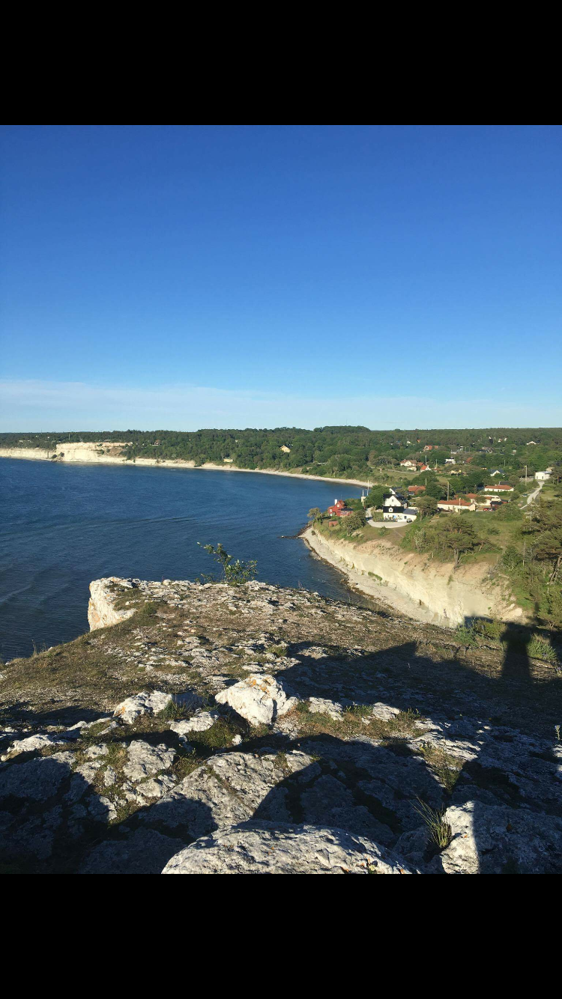
Dag 2. Här fick vi göra gipsmasker, leka, diskutera könsroller och kolla på film.
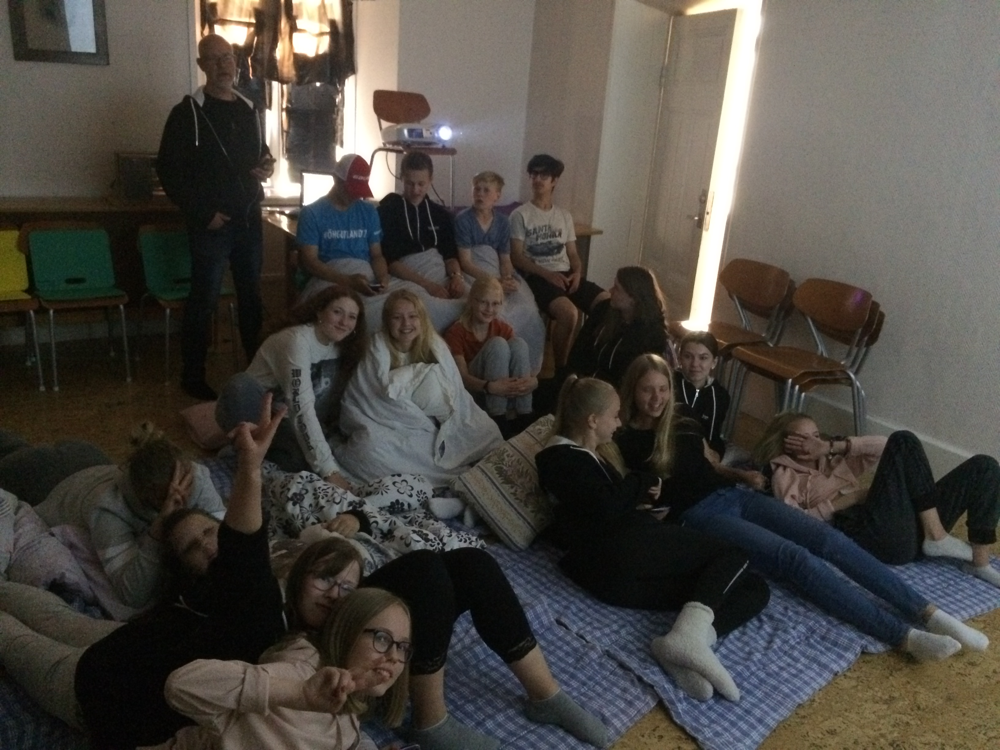 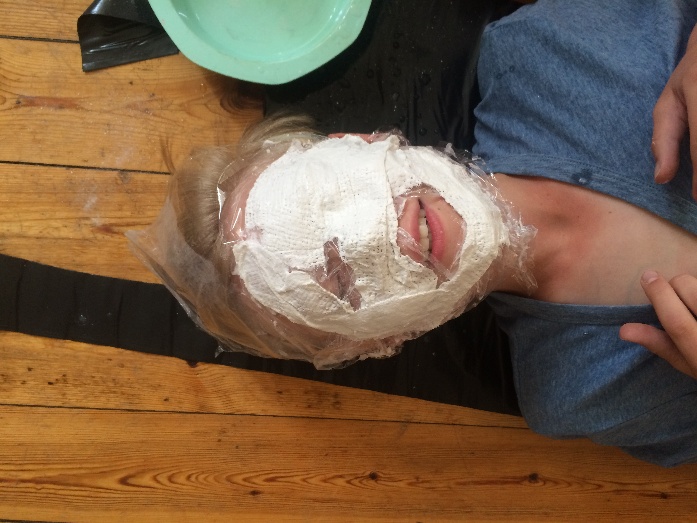
Dag. 3 Midsommar,
vi började dagen med att åka upp till Bungemuseum där vi firade midsommar, sen åkte vi och badade och fortsatte vidare och åt middag, när vi åkte hem standade vi vid jungfrun och sen åkte vi ner till fridhem igen.
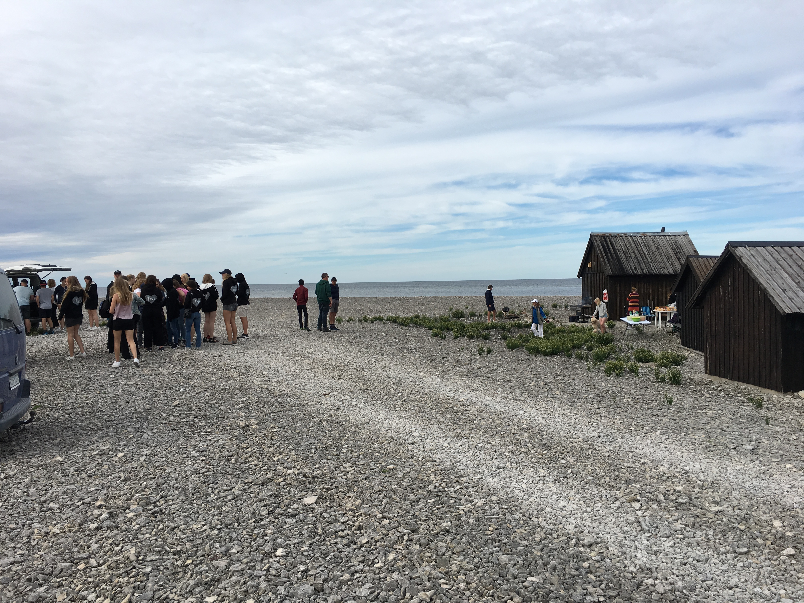 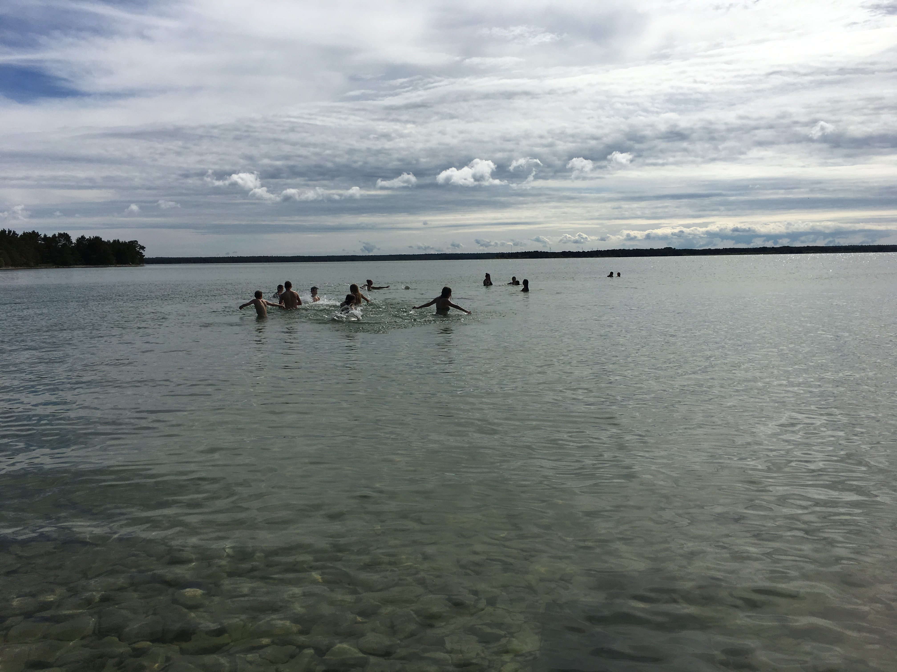 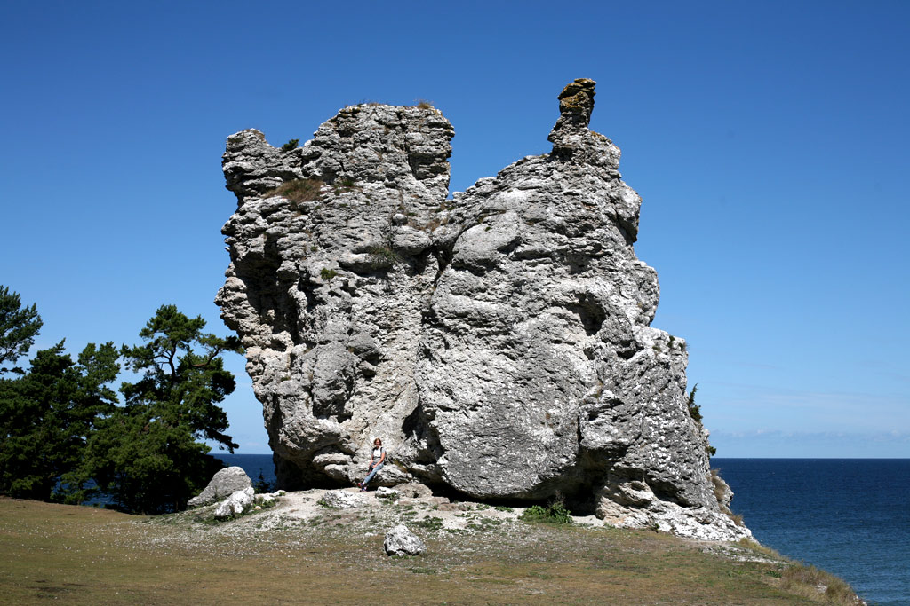
Dag 4. Vi hade ett dop för 2 tjejer, bakade egna tårtor till dopfikat, decorerade egna dopljus och lekte.
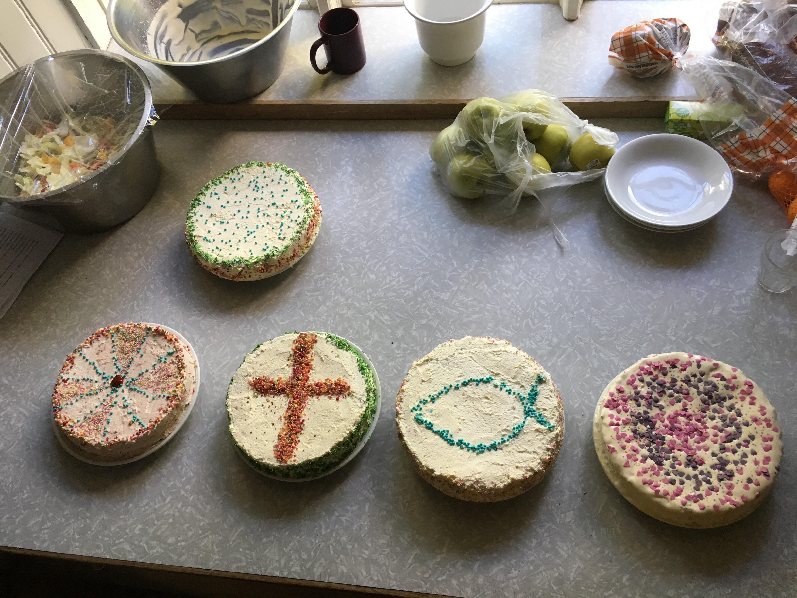 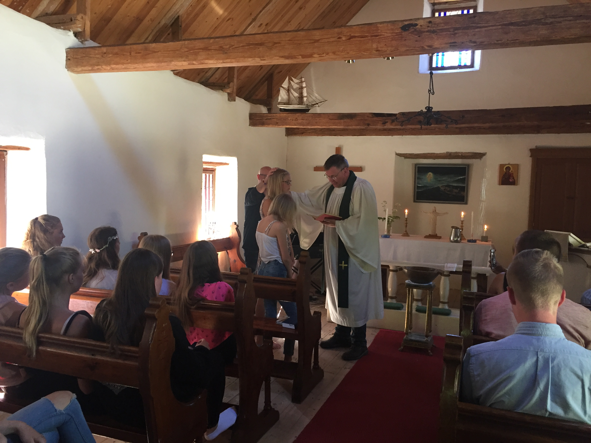
Dag 5. Vi var först på en gutstjänst i en riktig kyrka, sen åkte vi vidare till kneippbyn och gick omkrig och hade kul tills vi behövde åka hem, när vi väl var hemma gick vi upp på högklint innan vi gick och la oss .
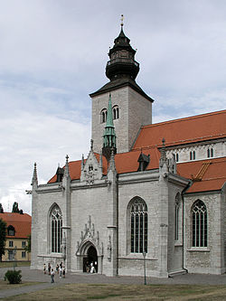
Dag 6. På förmiddagen åkte vi till visby där vi var i ca. 4 timmar och gick fritt.
Efter vi varir där åkte vi hem och hade ett bröllop, även om det inte var ett riktigt bröllop och ringarna sattes på fel hand var det ett fint bröllop
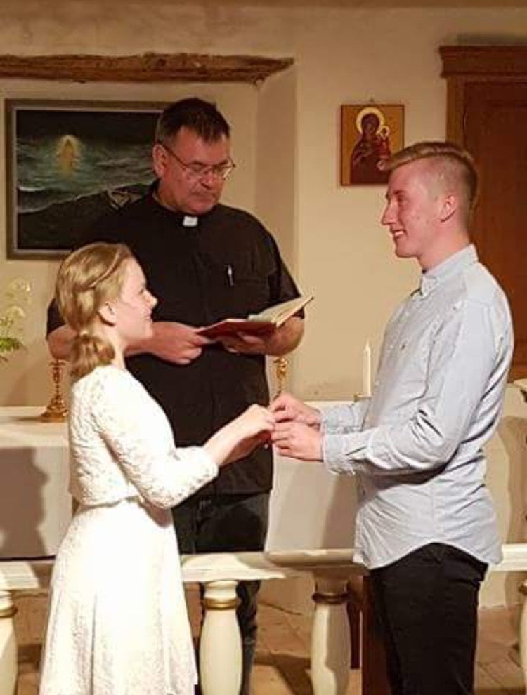
Dag 7. Under dag 7 som även var en tisdag gjorde vi inte så mycket som går att berätta, utöver att vi målade tröjor fick vi bada, mysa, kolla på film och leka
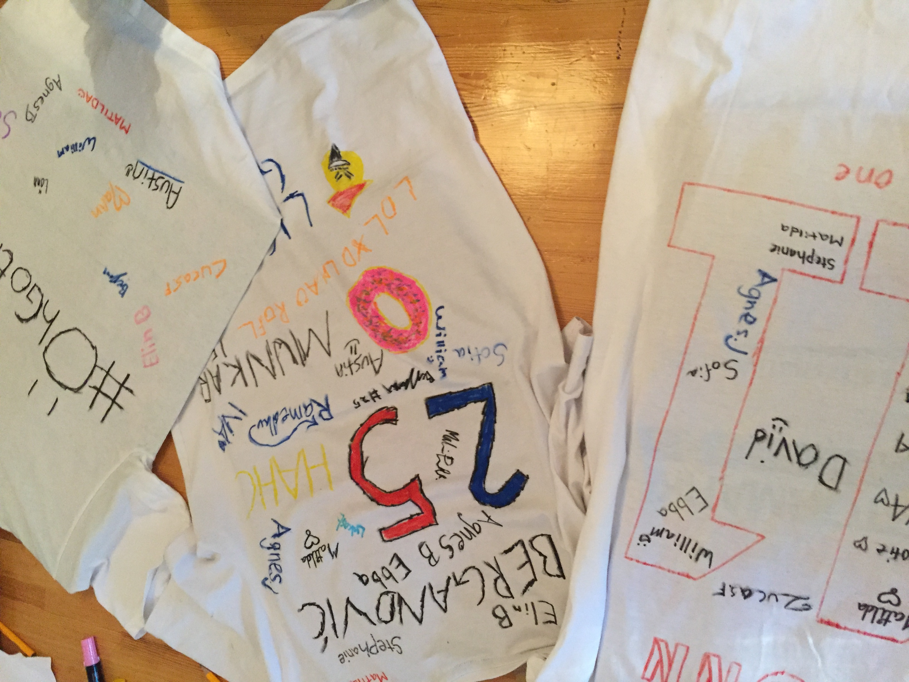
Dag 8. Eftersom vi jobbade med pärlorna på frälsarkransen hade vi kommit till nattens pärla, en pärla som handlar om döden och därför pratade vi om den, hur man kommer över ett dödsfall i närheten och om onska.
Efter samtalen hade vi en begraving, den var inte riktig utan för att lära oss om hur en begraving kunde gå till, även om ingen hade dött var det några som grät under begravingen.
Sen fick vi göra våra formar till ett kors vi skulle göra, vi han dock inte gjuta samma dag, men vi han göra formerna som tennet ska hällas i.
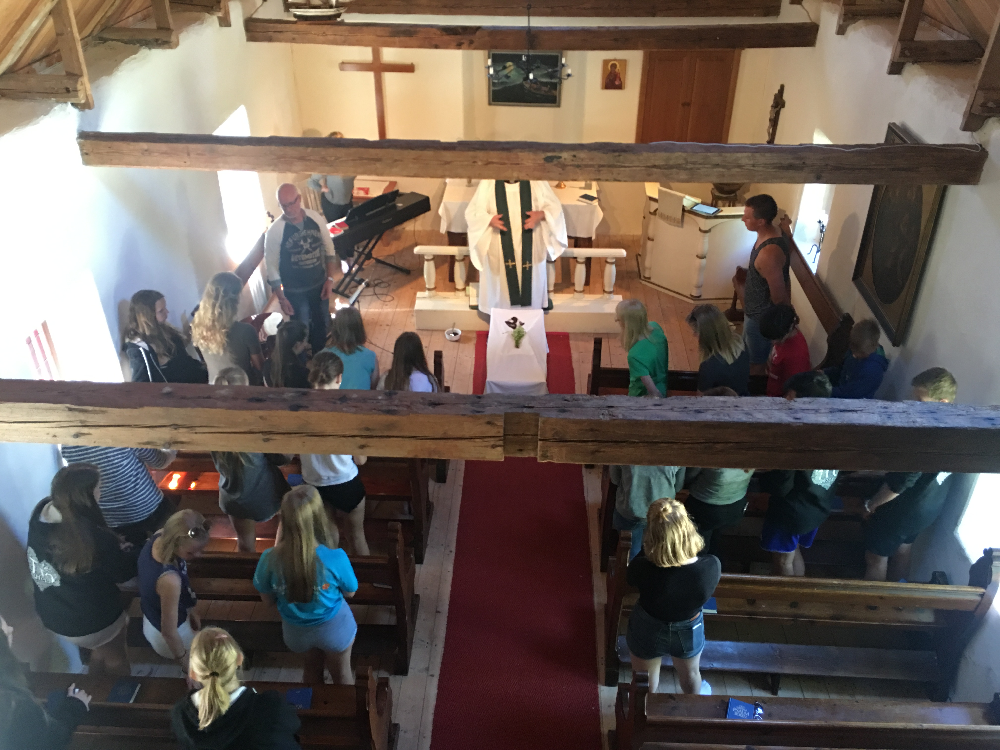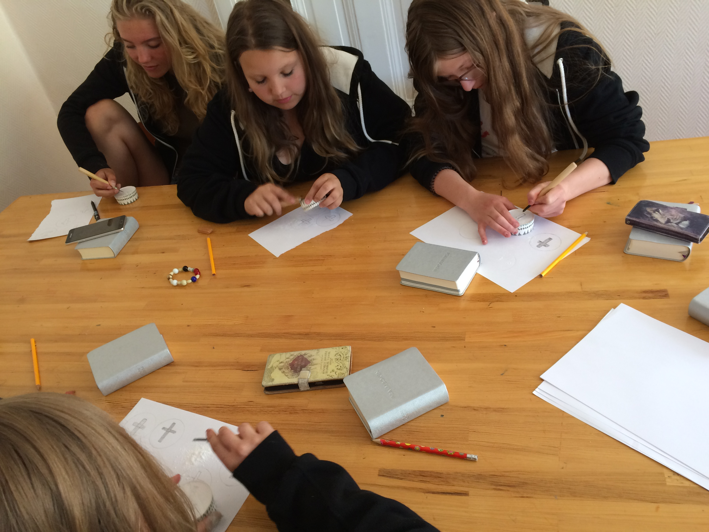
Dag 9. Idag samtalade vi i grupper om vilka bilder vi har av himlen, vad nära döden upplevelser är och mycket mera. Sedan fick vi gå ett Paulusspel där vi fick vandra runt som de första kristna strax efter Jesus korsdöd.
Idag hann vi även göra korsen vi gjorde former till, till middag hade vi ett långbord med tre rätters, läs mer om den under Fridhem.
På kvällen fick vi se ett bildspel med bilder på oss och ställen vi varit på.